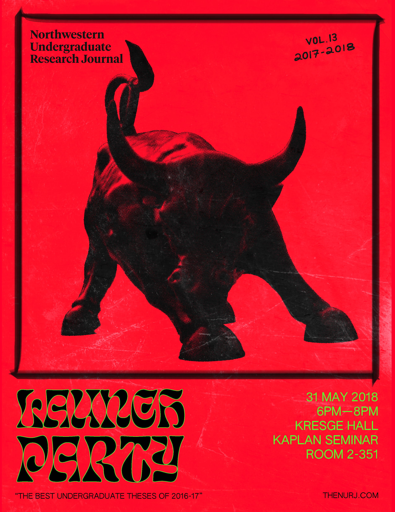

The outcome of a 10 week course on the principles of type design through Type@Cooper West
An instructional score that meditates on the body’s pulse and how it unfolds in time, space, and in relation to other bodies
A final project exploring the structure and fading nature of memory, captured in a micro-site and as XML poetry

Two years of art direction and print design for the NURJ